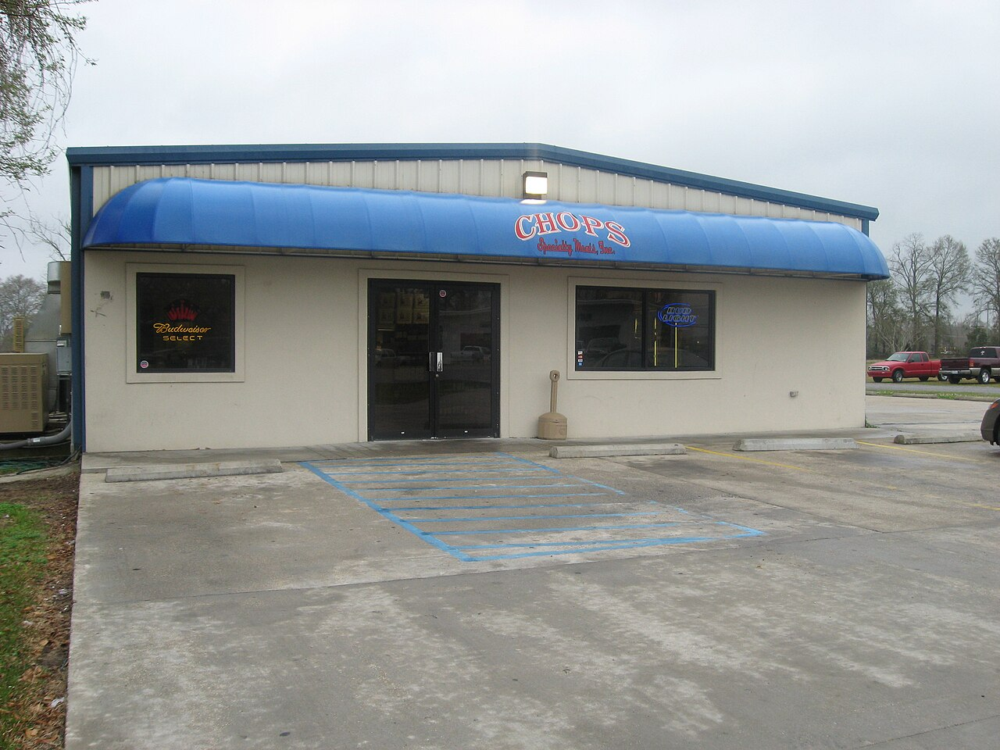

an organization · usSouthern Foodways Alliance
also: SFA

An institute of the Center for the Study of Southern Culture at the University of Mississippi, founded in 1999 and directed since then by John T. Edge, that documents the food of the South: oral histories, films, writing, awards and events, funded by about 800 members. For the Carolinas its work is the Southern BBQ Trail, an oral-history project begun in February 2011 across nine states, whose North Carolina set includes the Skylight Inn, Parker's, Grady's, B's, Bum's, Stamey's, Short Sugar's, Red Bridges, Cook's, Clyde Cooper's, the Barbecue Center and Ed Mitchell, and whose South Carolina set holds eight interviews: Sweatman's, Scott's, Midway, Jackie Hite's, Dukes, Cooper's Country Store, Brown's and Melvin's. Each interview is a transcript with audio, free online.
The story Cited · web-sfa-southern-bbq-trail
The SFA came out of a 1999 meeting called by the journalist John Egerton, with John Martin Taylor among the founders, and John T. Edge has directed it since. It gives the Ruth Fertel Keeper of the Flame award with the Fertel Foundation and the John Egerton Prize, and Corby Kummer in the Atlantic called it 'this country's most intellectually engaged (and probably most engaging) food society'. The Southern BBQ Trail went up on February 22, 2011, and the Carolina sets on April 25 of that year. The North Carolina introduction, by John Shelton Reed, opens on the point that barbecue was never home cooking — too much trouble — and until the early twentieth century was reserved for harvests, fundraisers and political rallies; the South Carolina introduction opens: 'Like everything in South Carolina, we cook barbeque cantankerously.' Rien Fertel interviewed Samuel Jones at the Skylight Inn for the project and went on to write The One True Barbecue (2016) about the whole-hog pitmasters; John and Dale Reed drew on the North Carolina interviews for Holy Smoke; in 2009 Edge himself profiled the Scott family of Hemingway. Rodney Scott's interview sits in the South Carolina set beside Bub Sweatman's and Jackie Hite's; Chip Stamey's, Sonny Conrad's of the Barbecue Center and Ed Mitchell's are in the North Carolina set.
How it is done Cited · wp-southern-foodways-alliance
Interviews are recorded by SFA oral historians, transcribed and posted with audio, a portrait and a short biography, under the project and the state; the site filters by state and by tag. Membership funds the work; the awards and events run alongside it.
Today Cited · wp-southern-foodways-alliance
Active at the University of Mississippi; the Carolina barbecue interviews remain online under the Southern BBQ Trail.
Facts
| founded | 1999 |
|---|---|
| status | open |
| state | us |
| region | The American South, The Carolinas |
| links | SFA — oral history · Southern BBQ Trail · North Carolina BBQ — the interviews · South Carolina BBQ — the interviews · Skylight Inn — interview |
| confidence | high · updated 2026-09-15 |
Its kin
Who points back
Pictures
{kind=link}
{kind=link}
Sources
- Southern Foodways Alliance — Wikipedia · link
- Southern BBQ Trail (oral history project, from February 22, 2011) · link
- North Carolina BBQ (oral history project, posted April 25, 2011; introduction by John Shelton Reed) · link
- South Carolina BBQ (oral history project, posted April 25, 2011) · link
- Southern Foodways Alliance oral history collection — barbecue projects (North Carolina, South Carolina) · link
- Rodney Scott (pitmaster) — Wikipedia · link
- The One True Barbecue: Fire, Smoke, and the Pitmasters Who Cook the Whole Hog — Rien Fertel, 2016
- Holy Smoke: The Big Book of North Carolina Barbecue — John Shelton Reed, Dale Volberg Reed, with William McKinney, 2008 · link
Where it came from: Cited a source we name · Harvested pulled from an open dataset · Tradition what the tradition says, hedged · Inference this project's reasoning · Field somebody stood there. This record as JSON.